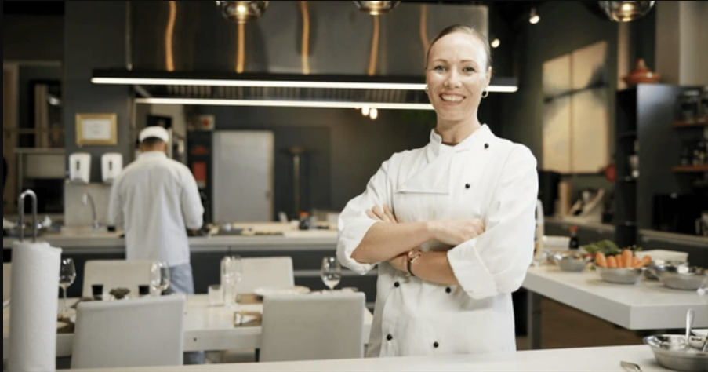
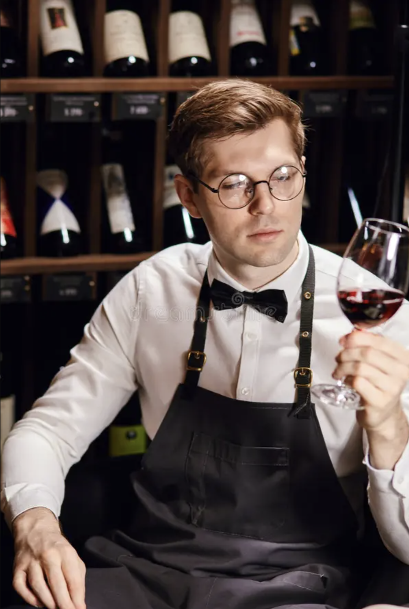

Nacido en el corazón de Miraflores, Sabor Andino Gourmet combina la tradición ancestral de la cocina peruana con técnicas modernas de alta gastronomía. Desde nuestros inicios, hemos buscado resaltar los sabores auténticos de los Andes, fusionándolos con una experiencia culinaria sofisticada.
Brindar una experiencia gastronómica única que conecte a nuestros clientes con la riqueza cultural y culinaria del Perú, a través de ingredientes locales, frescos y sostenibles.
Ser reconocidos como un referente de la gastronomía peruana contemporánea a nivel nacional e internacional, promoviendo el orgullo por nuestras raíces.
Chef Ejecutivo

Sous Chef

Sommelier